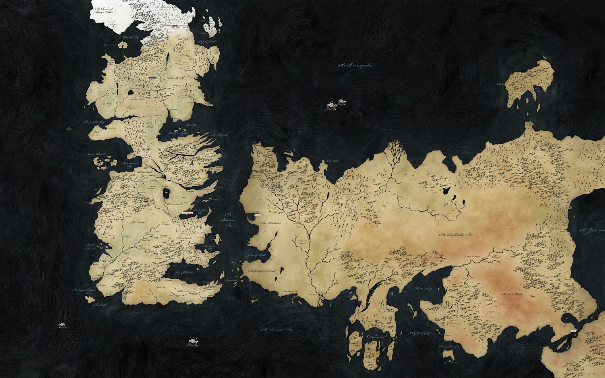

Reconstrução do Mapa de Westeros!
Nessa desafio você precisa reconstruir o mapa de Westeros usando as tags <img> e <br> com as peças individuais do mapa.
- Faça o download do arquivo .zip
- Extraia o conteúdo do arquivo .zip (botão direito > extrair tudo)
- Crie um novo arquivo HTML chamado Westeros.html
- Comece a montar seu mapa!
Mapa original para referência

Dica: Lembre-se que você pode redimensionar as imagens.